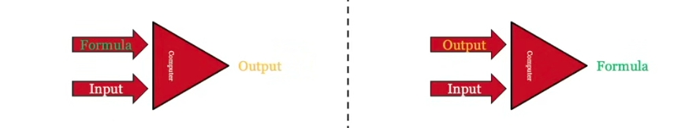
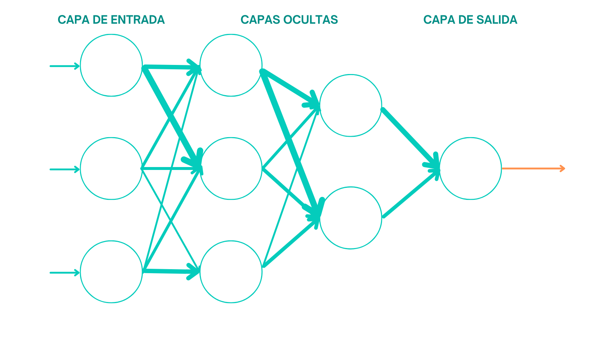

Máquinas inteligentes
En este siglo estamos experimentando lo que es considerado el surgimiento de la inteligencia artificial. Pero, ¿qué es la inteligencia artificial?, ¿cómo puedes utilizarla a tu favor? Aquí se resolverán todas tus dudas.😃
Primero de todo
La Inteligencia Artificial La Inteligencia Artificial (IA) es un campo de la informática que desarrolla sistemas y algoritmos capaces de simular capacidades humanas como el aprendizaje, el razonamiento, la percepción y la toma de decisiones autónoma. Utiliza grandes volúmenes de datos para identificar patrones y resolver tareas complejas sin programación explícita. Una gran diferencia entre la programación normal y el desarrollo de IA es que en la normal le das un algoritmo y un dato al ordenador y este te da la respuesta, mientras que en dessarrollo de IA, al ordenador le das un dato y la respuesta y este te da el algoritmo.

Cómo funciona
Sin profundizar en detalles técnicos, el método más empleado para el desarrollo de de IA son las redes neuronales. Las redes neuronales imitan el modo del que los cerebros aprenden. Se emplean nodos llamados neuronas conectados entre sí y divididos en capas que reciben y transforman datos hasta llegar a una solucion.

¿Para qué sirve la IA?
Hoy en día, se aplica en videojuegos para crear comportamientos inteligentes, en sistemas de recomendación, en el reconocimiento y generación de imágenes, texto y voz, y en asistentes virtuales. También se usa en salud para apoyar diagnósticos, en seguridad para detectar fraudes, en educación como tutor personalizado y en robótica para controlar máquinas y vehículos autónomos.
Si aun no te ha quedado del todo claro algún detalle sobre la IA, puedes mirar este video resumen:
¿Quieres hacer IA?
Aquí tienes recursos interesantes que te ayudaran q emprender tu camino como desarrollador de IA
Contacta conmigo
¿Quieres contactar conmigo para clases particulares de IA?, fácil, solo rellena el formulario que encontraras en este enlace.